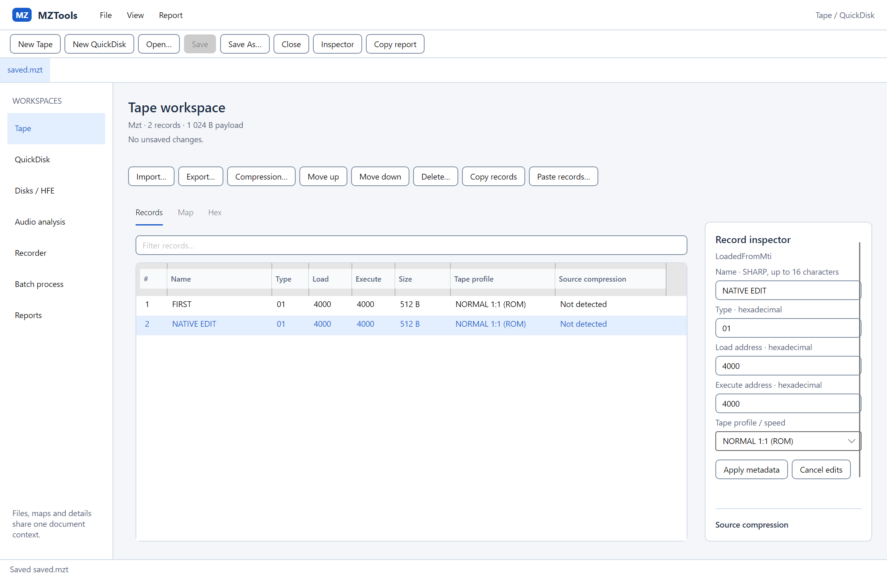
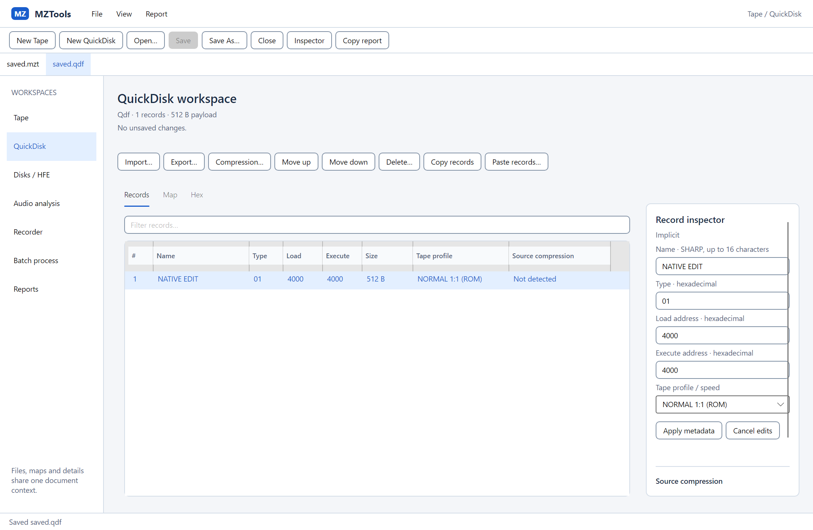
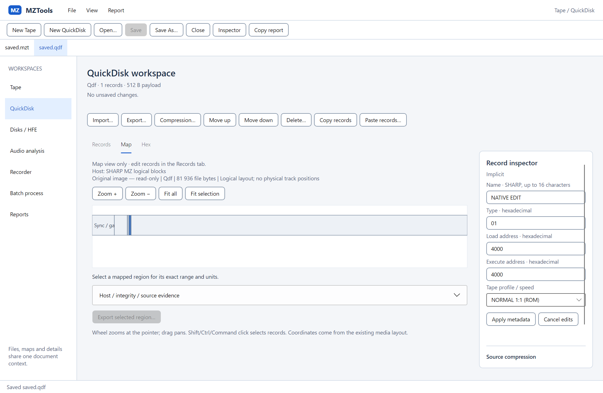
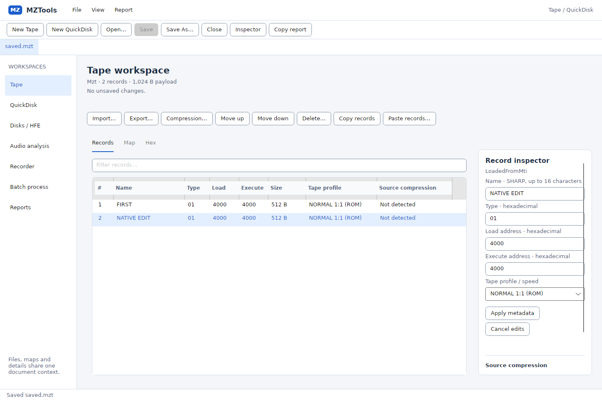
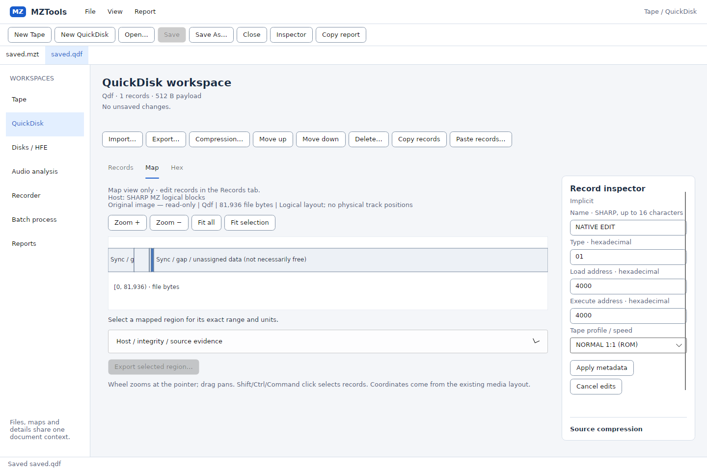
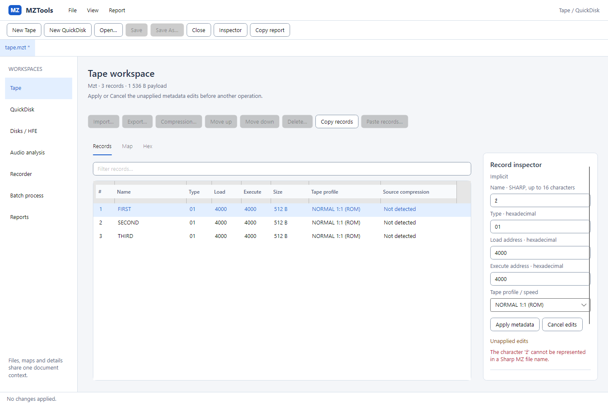
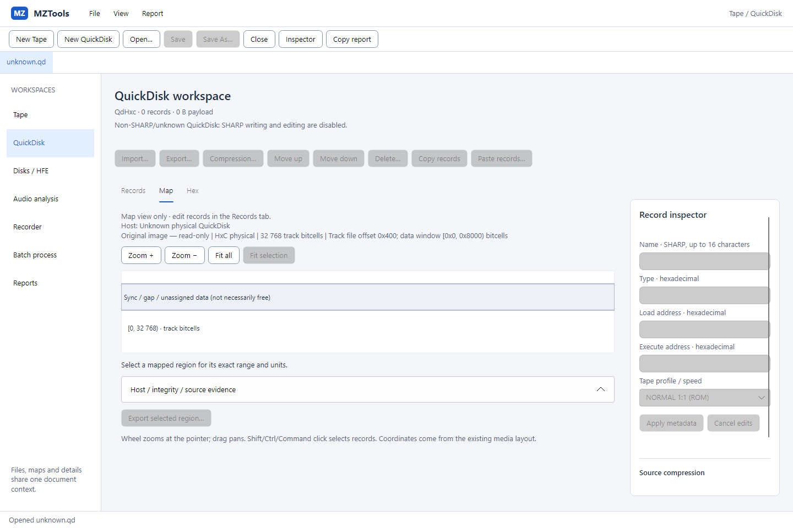
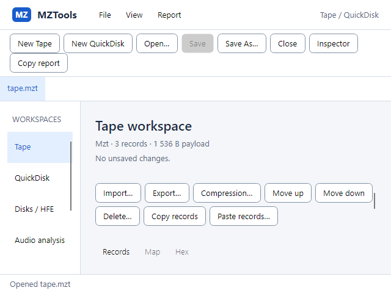
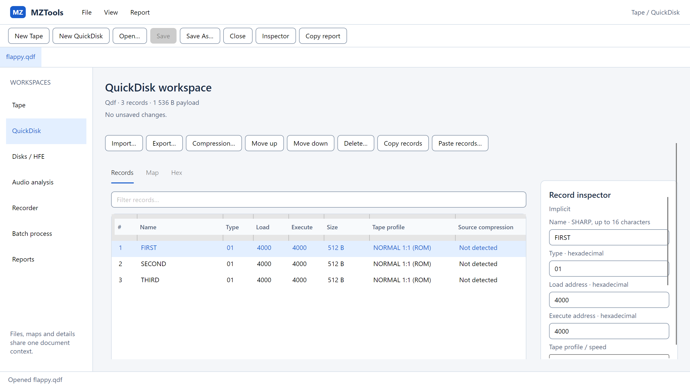

Windows · Tape po skutečném Save As
Nativní Win32 okno. Dva importované záznamy, upravené jméno, uložené MZT + MTI. Skia render vizuálního stromu běžícího okna; rozměry a skutečný scale jsou v JSON evidenci.

Skutečné Avalonia editory nad existujícím Core. Obrazy pocházejí z testů reálného importu, editace, uložení a opětovného načtení syntetických médií; nejde o HTML modelová data. Zvukové zařízení se nepoužívá.
Implementace, výsledky a zbývající parita · Původ a SHA-256 obrázků · Měřená evidence a rozměry nativních frameů
Nativní Win32 okno. Dva importované záznamy, upravené jméno, uložené MZT + MTI. Skia render vizuálního stromu běžícího okna; rozměry a skutečný scale jsou v JSON evidenci.

Vybraný záznam byl přenesen přes WorkspaceDragCodec, uložen do QDF a zachoval jméno i obsah. Původní Tape dokument a importované soubory se přenosem nemění.

Mapa vykresluje Core layout. Logické bajty a fyzické bitcells zůstávají rozlišené; původní snapshot je pro prohlížení. Editace probíhá přes Records.

Nativní X11 okno, stejný reálný postup import–editace–Save As–reload. WSLg nenahrazuje samostatný Linux desktop.


Neplatné SHARP jméno nezmění záznam ani soubor. Apply a Cancel rozlišují rozpracovaná pole a změnu dokumentu.

Syntetický fyzický QD s neznámým obsahem. SHARP writer není povolen; mapa a existující Core evidence jsou dostupné pro prohlížení a export vybraných regionů.

Headless Skia. Vertikální scroll zpřístupní celý workspace; inspector lze vyvolat samostatně. Příkazy dokumentu zůstávají dostupné nahoře.

1366 × 768 DIP do 2732 × 1536 px; není to doklad skutečného monitoru na 200 %.

Vzhled F4 čeká na schválení. macOS, fyzické audio a skutečný OS drag/drop pointer bridge jsou UNTESTED. Drop handlery, mapové kliknutí a přenos dat jsou ověřené řízenými vstupními testy. F5 není zahájena.